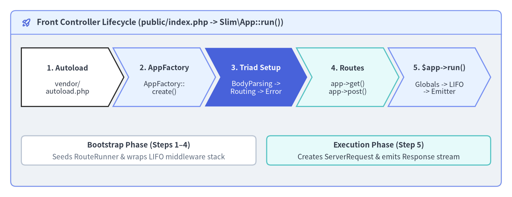
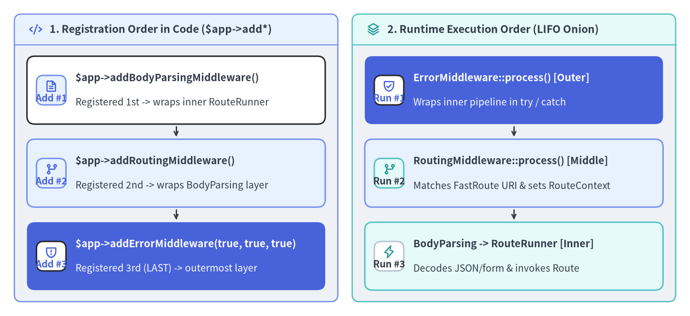

Quickstart & Middleware Triad
Bootstrapping a Slim 4 (v4.15.3) application requires only two Composer packages—slim/slim and a PSR-7 / PSR-17 HTTP message implementation—along with a single front controller (public/index.php). This guide walks through installing Slim 4, writing a strict-typed front controller with AppFactory::create(), ordering the Built-in Middleware Triad (BodyParsingMiddleware, RoutingMiddleware, and ErrorMiddleware) for Last-In-First-Out (LIFO) execution, and running your service locally.

Source Code
from drawlib.canvas import save, setup
from drawlib.icons import phosphor
from drawlib.shapes import rectangle
from drawlib.smartarts import ChevronProcess, Panel
from drawlib.styles import Colors, Styles
from drawlib.text import text
setup(width=192, height=74, dpi=150)
outer = Panel(
"Front Controller Lifecycle (public/index.php -> Slim\\App::run())",
style=Styles.Neutral.patch(shape_r=2.0),
header_style=Styles.PrimaryNeutral.patch(shape_line_width=1.2),
text_style=Styles.DarkBold.patch(text_size=11.2),
icon=phosphor.rocket_launch,
icon_style=Styles.PrimaryBold,
header_variant="filled",
header_height=8.8,
)
outer.draw((4.0, 4.0), width=184.0, height=66.0)
proc = ChevronProcess(
style=Styles.White,
text_style=Styles.DarkBold.patch(text_size=10.2),
description_style=Styles.Dark.patch(text_size=9.8),
corner_angle=62.0,
spacing=1.8,
flat_left_end=True,
)
proc.add(
"1. Autoload",
description="vendor/\nautoload.php",
style=Styles.White,
)
proc.add(
"2. AppFactory",
description="AppFactory::\ncreate()",
style=Styles.PrimaryNeutral,
)
proc.add(
"3. Triad Setup",
description="BodyParsing ->\nRouting -> Error",
style=Styles.PrimaryFlat,
text_style=Styles.WhiteBold.patch(text_size=10.2),
description_style=Styles.White.patch(text_size=9.8),
)
proc.add(
"4. Routes",
description="app->get()\napp->post()",
style=Styles.SecondaryNeutral,
)
proc.add(
"5. $app->run()",
description="Globals -> LIFO\n-> Emitter",
style=Styles.PrimaryNeutral,
)
proc.draw(xy=(8.0, 34.0), width=176.0, height=22.0)
rectangle((52.0, 17.5), width=88.0, height=11.0, style=Styles.White.patch(shape_r=1.5, shape_line_color=Colors.Gray4))
text((52.0, 19.5), "Bootstrap Phase (Steps 1–4)", style=Styles.DarkBold.patch(text_size=10.5))
text((52.0, 15.0), "Seeds RouteRunner & wraps LIFO middleware stack", style=Styles.Muted.patch(text_size=10.0))
rectangle((142.0, 17.5), width=84.0, height=11.0, style=Styles.SecondaryNeutral.patch(shape_r=1.5))
text((142.0, 19.5), "Execution Phase (Step 5)", style=Styles.DarkBold.patch(text_size=10.5))
text((142.0, 15.0), "Creates ServerRequest & emits Response stream", style=Styles.Dark.patch(text_size=10.0))
save()
Composer Installation & PSR-7 Selection
Because Slim 4 decouples its core routing and middleware kernel from any specific HTTP message package, you install slim/slim alongside your choice of a PSR-7 (psr/http-message) and PSR-17 (psr/http-factory) implementation. For most projects, either slim/psr7 (the official first-party implementation) or nyholm/psr7 + nyholm/psr7-server (a high-performance, zero-dependency implementation) is recommended:
# Option A: Install Slim 4 with the official slim/psr7 implementation (Recommended default)
composer require slim/slim:"^4.15" slim/psr7:"^1.7"
# Option B: Install Slim 4 with lightweight Nyholm PSR-7 & ServerRequest creator
composer require slim/slim:"^4.15" nyholm/psr7:"^1.8" nyholm/psr7-server:"^1.1"
All five supported PSR-17 / PSR-7 implementations are detected automatically by AppFactory::create() and ServerRequestCreatorFactory::create() without extra configuration:
| Implementation Option | Composer Command | Key Characteristics |
|---|---|---|
| Slim PSR-7 (Priority 1) | composer require slim/psr7 |
Official Slim implementation; strict PSR-7 / PSR-17 compliance out of the box |
| HttpSoft (Priority 2) | composer require httpsoft/http-message httpsoft/http-server-request |
Minimalist, fast PSR-7 and PSR-17 message classes |
| Nyholm PSR-7 (Priority 3) | composer require nyholm/psr7 nyholm/psr7-server |
Ultra-lightweight single-class Psr17Factory favored in high-concurrency APIs |
| Laminas Diactoros (Priority 4) | composer require laminas/laminas-diactoros |
Battle-tested enterprise PSR-7 / PSR-17 package from the Laminas project |
| Guzzle PSR-7 (Priority 5) | composer require guzzlehttp/psr7 |
Ideal when your application already uses guzzlehttp/guzzle for outbound HTTP calls |
Project Layout and Front Controller (public/index.php)
Even in a minimal microservice, never place index.php or vendor/ inside a publicly browsable root directory. Instead, point your web server's document root exclusively to public/ and keep vendor/, src/, and config/ one level above it.
Create public/index.php with declare(strict_types=1); at the top of the file:
<?php
declare(strict_types=1);
use Psr\Http\Message\ResponseInterface as Response;
use Psr\Http\Message\ServerRequestInterface as Request;
use Slim\Factory\AppFactory;
require __DIR__ . '/../vendor/autoload.php';
// Instantiate Slim\App using auto-detected PSR-17 ResponseFactory
$app = AppFactory::create();
// 1. Parse application/json, application/x-www-form-urlencoded, and XML bodies
$app->addBodyParsingMiddleware();
// 2. Match FastRoute patterns and attach RouteContext attributes to the Request
$app->addRoutingMiddleware();
// 3. Add ErrorMiddleware LAST so it executes FIRST as the outermost exception boundary
$errorMiddleware = $app->addErrorMiddleware(
displayErrorDetails: true,
logErrors: true,
logErrorDetails: true
);
$app->get('/hello/{name}', function (Request $request, Response $response, array $args): Response {
$payload = json_encode([
'message' => sprintf('Hello, %s!', $args['name']),
], JSON_THROW_ON_ERROR);
$response->getBody()->write($payload);
return $response->withHeader('Content-Type', 'application/json');
})->setName('greeting.hello');
$app->post('/api/v1/echo', function (Request $request, Response $response): Response {
$body = (array) $request->getParsedBody();
$payload = json_encode([
'received' => $body,
], JSON_THROW_ON_ERROR);
$response->getBody()->write($payload);
return $response
->withStatus(201)
->withHeader('Content-Type', 'application/json');
});
$app->run();
The Built-in Middleware Triad & LIFO Ordering
Slim 4 provides three first-party helper methods on Slim\App (Slim/App.php:125-175) that register the Built-in Middleware Triad. Understanding their registration order is critical because Slim\MiddlewareDispatcher organizes middlewares as a Last-In, First-Out (LIFO) concentric stack:

Source Code
from drawlib.canvas import save, setup
from drawlib.icons import phosphor
from drawlib.smartarts import CardList, Panel
from drawlib.styles import Colors, Styles
setup(width=192, height=88, dpi=150)
p_left = Panel(
"1. Registration Order in Code ($app->add*)",
style=Styles.Neutral.patch(shape_r=2.0),
header_style=Styles.PrimaryNeutral.patch(shape_line_width=1.2),
text_style=Styles.DarkBold.patch(text_size=11.0),
icon=phosphor.code,
icon_style=Styles.PrimaryBold,
header_variant="filled",
header_height=8.5,
)
p_left.draw((4.0, 4.0), width=90.0, height=80.0)
lx, lw, lh = p_left.get_content_box((4.0, 4.0), width=90.0, height=80.0, padding=(3.5, 3.2))
cl_left = CardList(
style=Styles.White,
text_style=Styles.DarkBold.patch(text_size=10.5),
description_style=Styles.Dark.patch(text_size=10.0),
badge_shape="rounded_rect",
badge_style=Styles.PrimaryNeutral,
badge_text_style=Styles.PrimaryBold.patch(text_size=10.0),
icon_style=Styles.PrimaryBold,
direction="vertical",
spacing=3.0,
show_arrows=True,
arrow_style=Styles.DarkBold.patch(line_arrow_head_scale=10, line_width=1.4),
)
cl_left.add(
"$app->addBodyParsingMiddleware()",
"Registered 1st -> wraps inner RouteRunner",
badge_text="Add #1",
icon=phosphor.file_text,
)
cl_left.add(
"$app->addRoutingMiddleware()",
"Registered 2nd -> wraps BodyParsing layer",
badge_text="Add #2",
icon=phosphor.git_branch,
style=Styles.PrimaryNeutral,
)
cl_left.add(
"$app->addErrorMiddleware(true, true, true)",
"Registered 3rd (LAST) -> outermost layer",
badge_text="Add #3",
icon=phosphor.shield_warning,
style=Styles.PrimaryFlat,
text_style=Styles.WhiteBold.patch(text_size=10.5),
description_style=Styles.White.patch(text_size=10.0),
badge_style=Styles.White,
badge_text_style=Styles.PrimaryBold.patch(text_size=10.0),
icon_style=Styles.PrimaryBold,
)
cl_left.draw(xy=lx, width=lw, height=lh)
p_right = Panel(
"2. Runtime Execution Order (LIFO Onion)",
style=Styles.Neutral.patch(shape_r=2.0),
header_style=Styles.SecondaryNeutral.patch(shape_line_width=1.2),
text_style=Styles.DarkBold.patch(text_size=11.0),
icon=phosphor.stack,
icon_style=Styles.SecondaryBold,
header_variant="filled",
header_height=8.5,
)
p_right.draw((98.0, 4.0), width=90.0, height=80.0)
rx, rw, rh = p_right.get_content_box((98.0, 4.0), width=90.0, height=80.0, padding=(3.5, 3.2))
cl_right = CardList(
style=Styles.White,
text_style=Styles.DarkBold.patch(text_size=10.5),
description_style=Styles.Dark.patch(text_size=10.0),
badge_shape="rounded_rect",
badge_style=Styles.SecondaryNeutral,
badge_text_style=Styles.DarkBold.patch(text_size=10.0),
icon_style=Styles.SecondaryBold,
direction="vertical",
spacing=3.0,
show_arrows=True,
arrow_style=Styles.DarkBold.patch(line_arrow_head_scale=10, line_width=1.4),
)
cl_right.add(
"ErrorMiddleware::process() [Outer]",
"Wraps inner pipeline in try / catch",
badge_text="Run #1",
icon=phosphor.shield_check,
style=Styles.PrimaryFlat,
text_style=Styles.WhiteBold.patch(text_size=10.5),
description_style=Styles.White.patch(text_size=10.0),
badge_style=Styles.White,
badge_text_style=Styles.PrimaryBold.patch(text_size=10.0),
icon_style=Styles.PrimaryBold,
)
cl_right.add(
"RoutingMiddleware::process() [Middle]",
"Matches FastRoute URI & sets RouteContext",
badge_text="Run #2",
icon=phosphor.git_branch,
style=Styles.PrimaryNeutral,
)
cl_right.add(
"BodyParsing -> RouteRunner [Inner]",
"Decodes JSON/form & invokes Route",
badge_text="Run #3",
icon=phosphor.lightning,
style=Styles.SecondaryNeutral,
badge_style=Styles.White.patch(shape_line_color=Colors.Gray4),
badge_text_style=Styles.DarkBold.patch(text_size=10.0),
)
cl_right.draw(xy=rx, width=lw, height=lh)
save()
Each middleware in the triad fulfills a distinct responsibility in the request lifecycle:
Helper Method on Slim\App |
Middleware Class (Slim\Middleware\*) |
Recommended Registration Position | Purpose & Behavior |
|---|---|---|---|
$app->addBodyParsingMiddleware(array $bodyParsers = []) |
BodyParsingMiddleware |
1st (Innermost of triad) | Parses application/json, application/x-www-form-urlencoded, and application/xml / text/xml streams into $request->getParsedBody(). |
$app->addRoutingMiddleware() |
RoutingMiddleware |
2nd (Middle of triad) | Runs RouteResolver::computeRoutingResults() and attaches RouteContext::ROUTE (__route__), ROUTE_PARSER, and ROUTING_RESULTS attributes to $request. |
$app->addErrorMiddleware(bool $displayErrorDetails, bool $logErrors, bool $logErrorDetails, ?LoggerInterface $logger = null) |
ErrorMiddleware |
3rd / LAST (Outermost of triad) | Wraps the entire inner pipeline in a try / catch (Throwable $e) block and renders 404/405/500 exceptions into HTTP responses. |
[!IMPORTANT] Why
addErrorMiddleware()Must Be Added Last: If you accidentally registeraddErrorMiddleware()beforeaddRoutingMiddleware(), thenRoutingMiddlewarewill sit outsideErrorMiddlewareat runtime. When a client requests an unknown URL andRoutingMiddlewarethrowsHttpNotFoundException, the exception will escape uncaught to PHP's fatal error handler instead of returning a clean 404 response.
When you register custom application middlewares that need to inspect the matched route (such as an authorization guard reading route arguments or route names via RouteContext::fromRequest($request)), register them before $app->addRoutingMiddleware() in code so they execute after RoutingMiddleware at runtime:
<?php
declare(strict_types=1);
use Psr\Http\Message\ResponseInterface;
use Psr\Http\Message\ServerRequestInterface;
use Psr\Http\Server\RequestHandlerInterface;
use Slim\Factory\AppFactory;
use Slim\Routing\RouteContext;
$app = AppFactory::create();
// 1. Parse JSON / form bodies (Innermost)
$app->addBodyParsingMiddleware();
// 2. Custom middleware registered BEFORE addRoutingMiddleware() -> runs AFTER RoutingMiddleware!
$app->add(function (ServerRequestInterface $request, RequestHandlerInterface $handler): ResponseInterface {
$routeContext = RouteContext::fromRequest($request);
$route = $routeContext->getRoute();
$routeName = $route ? ($route->getName() ?? 'unnamed') : 'unmatched';
$response = $handler->handle($request);
return $response->withHeader('X-Matched-Route', $routeName);
});
// 3. Perform FastRoute matching before the custom middleware above executes
$app->addRoutingMiddleware();
// 4. Outermost exception boundary (Always added LAST)
$app->addErrorMiddleware(displayErrorDetails: true, logErrors: true, logErrorDetails: true);
Running Locally with Built-in PHP Server & Docker
To streamline local development, configure PSR-4 autoloading ("App\\": "src/") and a "start" script inside composer.json that launches PHP's built-in development web server rooted at public/:
{
"name": "acme/slim4-starter",
"description": "Slim 4.15.3 microservice starter",
"type": "project",
"license": "MIT",
"require": {
"php": "^8.1",
"slim/psr7": "^1.7",
"slim/slim": "^4.15"
},
"autoload": {
"psr-4": {
"App\\": "src/"
}
},
"scripts": {
"start": [
"Composer\\Config::disableProcessTimeout",
"php -S localhost:8080 -t public"
]
}
}
Start the development server and verify both your routes and BodyParsingMiddleware using curl:
# Start the built-in PHP server on http://localhost:8080
composer start
# Test the GET route with a URL parameter
curl -i http://localhost:8080/hello/Slim4
# Test the POST route with a JSON request body parsed by BodyParsingMiddleware
curl -i -X POST http://localhost:8080/api/v1/echo \
-H "Content-Type: application/json" \
-d '{"service":"billing","version":4}'
# Verify ErrorMiddleware catches unmatched routes and returns a formatted 404
curl -i -H "Accept: application/json" http://localhost:8080/unknown-path
Now that your first Slim 4 endpoint and middleware triad are running, continue to Chapter 2: Modular Design & Action Controllers and PSR-11 DI & Callable Resolution to organize routes, single-action controllers, domain services, and PHP-DI container bindings for production scale. You can also review Why Slim 4 & PSR Standards or look up method signatures in the Slim 4 API Reference and Slim 4 Internal Architecture.